How blocks, girders, anchors and cables should find their place in 3D when the pointer only knows 2D. Read from the current prototype, checked against twenty-odd games and CAD tools, sketched on the real renderer, and playable in sandboxes you can build in.
A small world in Spall's projection with the proposed rules. Lay blocks, raise girders, hang anchors and cables, run pipes and roads; rotate it four ways and move the cut. Today switches the same tools to the prototype's current rules, so you can feel the difference on the same scene. Every section below has its own copy, set up for that section.
In 2:1 iso every screen pixel stands for a whole line through the world: a step down one level is a step of one and a half cells along both axes. The prototype answers "which point on that line?" differently in every tool.
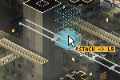
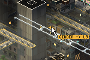
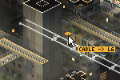
The rest of the list, from 60_build.js, 62_wires.js and 85_input.js:
pieceOK only checks that the cells are empty; a ghost over a void looks the same as one on a floor.screenAtDepthOf), a fourth rule that's mathematically neat and impossible to see.Two research passes: building games with vertical or layered construction, and CAD and voxel tools. These are the tricks that carry over, grouped by the problem they solve. Bullets marked (mem) are from memory and unverified.
Each gesture fixes a carrier from context, a point, a line or a plane, and the pointer only moves along that. The table is the whole idea.
| Gesture | Depth comes from | Pointer moves on | Feedback |
|---|---|---|---|
| Block stamp | The cut level (your hand) | A plane | Plumb lines, landing shadow, a virtual floor patch, a level chip |
| Girder start | A snap site: joint, girder, edge, face | A point | Site dots near the pointer; the winner's kind |
| Girder run | The axis through the start | A line (x, y or z, chosen by drag direction) | Axis guides in three colours; stops at walls; length chip |
| Anchor | The host under the pointer | That face, edge or girder | A brass fitting shaped by its host |
| Cable end | An anchor or a snap site | A point | The real cable at the length it will keep |
| Cable slack | The two ends | The vertical plane through them | Sag in cells; detents at taut, touching the floor, matching a neighbour |
Anchors and girder joints win inside 7 px. Girder slots (every half cell) and lip edges win inside 5 px. Then the face under the pointer, if it lies inside the working band. Anything sliced away or hidden behind something is never a target; the renderer already knows what's visible.
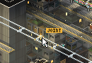
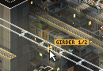
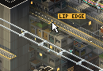
Press on a site, drag, release on a site. What follows the pointer is the real cable at the length it will keep, so letting go changes nothing (the prototype already does this part well). New: the default slack comes from a sag ratio rather than a length formula, scroll sets the sag before you let go, and the end shows what it's landing on.
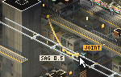
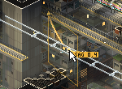
Detents worth having on the belly drag: taut, just touching (the length where the low point meets the surface below, for cables that rest on a deck), and match (the sag ratio of the nearest cable it runs alongside). Match is the one that serves the look: parallel runs that sag together read as infrastructure, mismatched ones read as a mess.
In 2:1 iso the three axes go to three clearly different screen directions: x down-right, y down-left, z straight up. So a girder needs no axis modifier. Start on a site, drag, and the run follows the axis closest to your drag. It stops at the first wall or floor and makes a joint where it lands on another girder. Unit diagonals in any axis plane also come out as clean 45° or vertical pixel lines, so bracing is a later option that won't break the pixel grid.
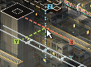
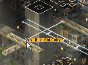
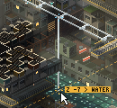
Try the whole chain here: raise a girder from a joint or a lip, hang anchors on it, string cables between them, then drag a cable's middle to set its slack. Switch to Today to see the same cable gesture fall through the void.
Should blocks rest on structure? I'd allow hovering at the cursor. A megastructure is bridges and cantilevers, and a support rule enforced at the pointer makes planning miserable. But the ghost has to tell you how it's held up, and the build should deal with it: drones raise props or girders first, or the job won't start. That last part is gameplay, so it belongs to the parallel session; the cursor only needs to show it.
Where blocks go is the one place I changed my mind while building the sandbox. I first thought face-attach (Townscaper) couldn't work under a cut, because the faces you'd attach to above it are sliced away. It works if the cut follows you: attach on top of a cut face and the cut rises one level to show what you made. So the sandbox has four modes to compare:
In every mode a drag repeats the block along the axis you drag, including straight up, which stacks a column and lifts the cut with it.
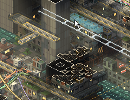
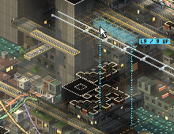
Two small additions keep depth inside the gesture. [ and ] while hovering move the ghost and the cut together, so you never leave the tool to change level. Alt-click any surface to jump the cut to it (Timberborn's eyedropper), generalising today's double-click.
Picking a spot on a floor and then lifting straight up from it is the classic fix for this problem, and it reads well in iso. With girders doing most of the lifting, it's only needed for blocks and posts that should stand at a height other than the cut.
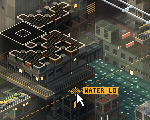
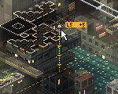
You asked whether these need mechanics of their own. Mostly they don't, and that is the useful finding. Everything placeable here is one of four shapes, and each shape already has its gesture:
| Shape | Things | Gesture | Depth from |
|---|---|---|---|
| Cells | Blocks, road decks and ramps | Click, or drag to repeat or route | The face you point at, or the cut |
| Lattice runs | Girders, rigid pipes | Press on a site, drag along an axis | The start site |
| Free curves | Cables, flexible hoses | Site to site, then sag | Both end sites |
| Points | Anchors, ports | Click a host | The host |
A rigid pipe starts like a girder and runs along the axis you drag. Two additions make it a pipe tool. Point at a site (an anchor, a joint, another pipe's end, a face) and the pipe routes itself there with elbows: first along the axis you dragged, then along the longest remaining one. And a pipe end is a first-tier snap, so you extend a run by starting on its end. Flexible hoses stay cables; the prototype already has them as a cable gauge.
A road occupies cells, like a block, but you lay it with a drag, like a girder. Press on a top or a road end and drag an L. Its height comes from where you started. Scroll while dragging adds ramps, two cells per level, right after the start. Point at another road end and the new road joins it at its level. Crossing another road at a different level makes a bridge with no extra step; at the same level it makes a junction. Pillars appear under any road with air beneath it, so support is shown rather than placed (Factorio's elevated rails and Captain of Industry do the same). Dense interchanges come from stacking those pieces: the Roads scene has a street, an overpass two levels up and a ramp between them.
Road ends are snap sites only for the road tool. Scoping snaps to the tool, as Houdini and most CAD packages do, keeps the other tools' dot clouds readable.
Left out of the sandbox: lanes and widths, curves, merging partway along a road (only ends join), and checking headroom above a road. Curves are the big open question. 45° pieces stay clean in 2:1 pixel art; arbitrary curves don't.
Context snapping with a working band, axis-drag girders, belly-drag slack, and anchors that appear when a cable lands. Here is how it compares with the other families of answer.
| Scheme | Predictable | Reach | Cost | Verdict |
|---|---|---|---|---|
| Everything on the cut plane (Dwarf Fortress, Timberborn) | Very | Only the cut level; cables between levels need constant cut changes | Lowest | Right for blocks. Too stiff for cables in a void. |
| First surface under the pointer (Townscaper; today's cables) | On solid ground. In a void it falls through to whatever is deepest. | Anything visible | Low | Fine for a toy town. Wrong for a world that is mostly holes. |
| Context snaps + working band (SketchUp, Bier, KSP) | Yes, if the winner and its kind are always shown | The band, plus anything you've already anchored or braced | Medium: one pick function, site lists, a visibility test | Recommended. Depth always comes from something you can see. |
| Free 3D cursor + elevator for all (Rhino, RCT Shift) | Yes, but two steps every time | Anywhere | Medium, and slow to use | Keep as a modifier for blocks and posts only. |
What it costs: more on screen near the pointer (site dots, a chip), a rule players have to learn (the band), and a new object type (anchors as first-class things with hosts, which also need to follow a host that's moved or demolished). What it buys: every cable end you place is a thing you saw before you let go.
Each is small and lands in stratum-wires on its own. The first four are the ones I'd do this week.
wireAnchor, gridPointAt and screenAtZ with pickSite(bx, by, tool): tiers, the band, a visibility test against the level images, hover dots and a kind chip. The test: can you predict where an end will land before you press?WIRES.mounts to real anchors with a host reference and a glyph per host type.Shots are real frames from stratum-wires with overlays drawn on its canvas: experiments/stratum-wires/mockups/placement/ (pl.js scenes, shoot.mjs, sandbox.js, build.py). Not committed.